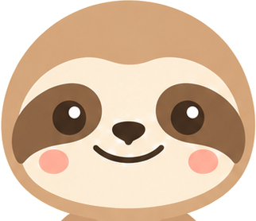
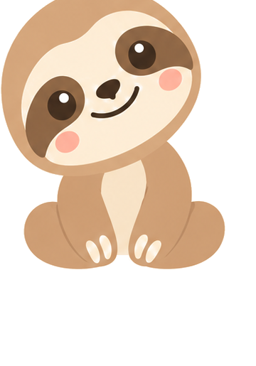
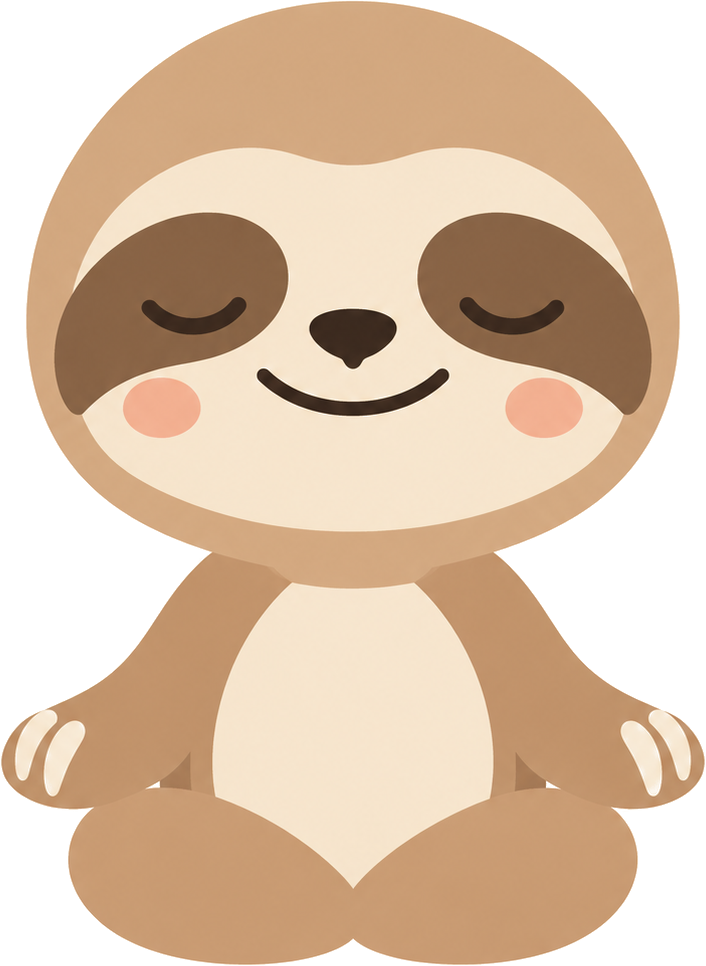
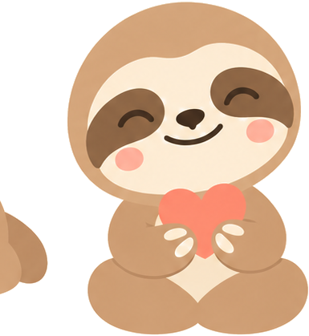
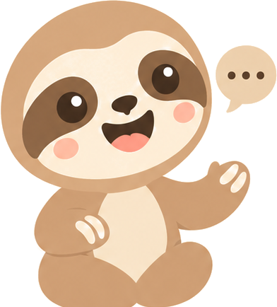

Melvin, 2026-09-20: copy the Headspace onboarding from the screenshots, cream background, peaceful, with Otto animated on top and the question count shown. This page is that flow, screen for screen, in 808's own words and colours. The structure is theirs to borrow (a flow is not anyone's property); the sentences, the art and the features are ours.
Two rules from this repo survive the copy: no sign-in on the first screen (every person who used it skipped the whole flow), and the paywall comes after the first session, so the trial timeline is drawn here as that screen's new face, not as an onboarding step. Flip it into the flow if you want Headspace's order; it is one constant.
Otto waves once when the screen lands, then breathes. One button. No account link: that is the door people used to skip everything.
Headspace's line, in our voice. Three seconds, then it fades into the breath.

Otto's head rises from the bottom of the screen on the inhale and settles on the exhale, five seconds each, the way Headspace's orange half does. A soft haptic at the top of each inhale, a softer one at the start of each exhale, on the animation's own clock.
The template for every interview screen. The count in the corner is honest per person: the model already skips questions whose premise you've contradicted, so "2 of 7" is that person's seven. Otto's head breathes top-left the whole way through; tapping him gets one line about why we ask.
Tap advances after a short dwell, as today. The answer decides which of the next questions exist, which is why the count can change between screens and why it must never be hardcoded.

Unchanged in substance, dressed the same as the rest. Not skippable, because the answer routes the person.



Headspace's activity list, but ours: every row is a thing the app does today, and Otto is in three of them because he is the thing that's new.
Headspace's reminder screen with Otto holding the notification. The time picker stays (it was moved here when the anchor question was cut). Consent still means the OS dialog, not this screen.
Headspace's timeline is the clearest trial screen in the category and 808's paywall should look like it. Under the current rule this appears after the first session, once the person has their own score on screen.
breathing, wave, talk inputs set from Swift), it rigs the PNGs Aziz already drew through a mesh instead of asking for new art, and Duolingo uses it for its characters. Cost: Rive's Cadet plan at $9 a month for one seat, needed only to export the file; the runtime is free and adds about 4.7 MB. Rive ships an official MCP served by its desktop editor, so the rig can be built and iterated from here once the editor is installed and signed in.